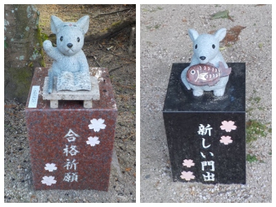

更新日 : 2026/02/14

梅の開花時期なので梅林を見にいったんですが、梅は数本あっただけでした。梅林は違うところにありそうです。
ネズミのオブジェが沢山あるんですが、時期的にこの「合格祈願」と「新しい門出」がオススメかなと思いました。インスタ等のSNSで写真を撮られる方はどうぞです。
寄付が多いのか、ネズミの数が増えましたね。だんだん神社が狭くなってる感じがしました。公園とか新しく出来る令和の森にねずみが移動しないかな。
【おいしいものを食べよう。】【たくさん寝よう。】
【ソロ活をしよう!】【季節感のあることをしよう。】【動画視聴はほどほどに。】【当サイトの全てのコンテンツは無断転載禁止です。】